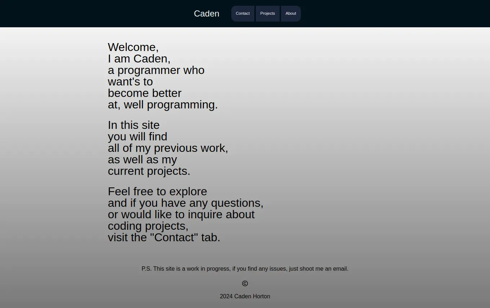
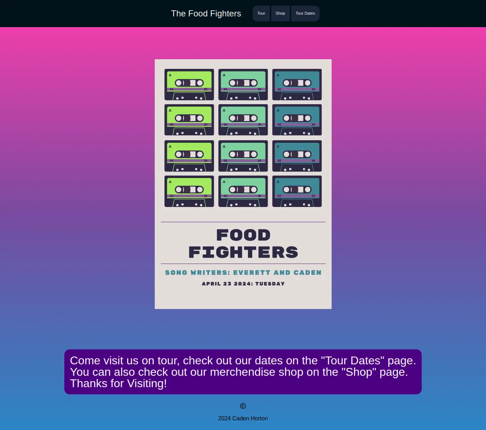

My Projects
This website was a project for me. It took about nine hours just on the first day to get it working like I wanted. I mean, hey, it may not look the best, but I made it by hand. And if you wanna check out the rest of the site, be my guest.
I made a website for a "Band Promo Pack" project, the whole idea was to make promotional material for your band. I though that this would be a great way to test my abilities in build a website.
Check it out here My first web game made with Unity. It runs on webgl and it looks pretty good. It was made in Unity 2021 from my coding classes at CodeNinjas St. Albert.
Check it out here